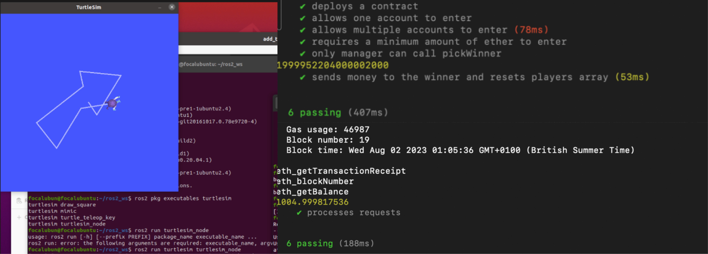

Online Courses Review
SOLID Principles
Software Architecture Object-orientated Programming- Motivation: Addressing a gap in my Electronic Engineering degree, I chose to take this course to deepen my understanding of software design architecture. In my first project at Intel - I realized the importance of software architecture principles like SOLID.
- SOLID principles better equip our software code to allow for scalability, maintainability, and modular code. SOLID principles enhance code flexibility and allow it to be adapted, extended and maintained over the product software development lifecycle.
- Having experienced the software environment in production during my Intel work experience, I applied my knowledge of SOLID principles for my software modification project.
- Quick Review:
- A fairly straightforward course that explains SOLID principles and application very well. Examples in the course are given in Java, however, it is not hard to visualize it for those with prior experience in an object-orientated programming language like C++
As an electronic engineering student, this course elevates my coding mindfulness - writing quality code instead of just writing ‘code that just works’!
Solidity - Ethereum Programming Language
Solidity JavaScript Mocha - Software Testing React Ganache Web3 Library Node.js- Motivation: As a crypto enthusiast, my knowledge was limited to the basics of blockchain technology. I wanted to learn the intricacies of Blockchain development. I chose Solidity, the language of the first programmable blockchain - Ethereum.
- The course impressively addresses Solidity 'gotchas,' comparing it with traditional programming. It illustrates additional constraints faced by smart contract developers, compared to regular programming.
- For instance, each write/code that modifies value in a smart contract is considered as a ‘transaction’ - hence costs money. Therefore code that is inefficient and written multiple times can cost the developer lots of lost money - efficient code that reduces redundant write operations is CRUCIAL.
- In addition to Solidity, I also learned about software testing using the Mocha framework. Rigorous testing is vital in blockchain development.
- Fun note: Drawing parallels between hardware and software verification, both employing assert statements to check for correct output behaviour.
- Quick Review:
- The course is very well-taught and the lecturer explains the reasoning behind each code very well. I could follow along without any problem, depreciated library functions are also updated as a text snippet. I learned a lot about not just blockchain development but also software best practices and software testing.
Robot Operating System 2 (ROS2)
C++ Python ROS2 Linux- Motivation: During my time at Intel, I was given an optional side project to work on - a self-balancing robot. One of the objectives was to run ROS2 to allow self-balancing functionality on the two-wheeled robot.
- ROS2 was chosen to learn instead of ROS due to their continuous future support by the ROS community as well as allowing robot-to-robot communication.
- I learned about ROS2 architecture, client-subscriber communication, Turtlesim visualization. It would be good for the course to add content that allows visual robot interaction within ROS2.
- Quick Review:
- Some Linux commands and code in the Udemy videos are deprecated, I have a lot more time than expected debugging it. Therefore, I would suggest ROS2's official website for setup and starting tutorials.